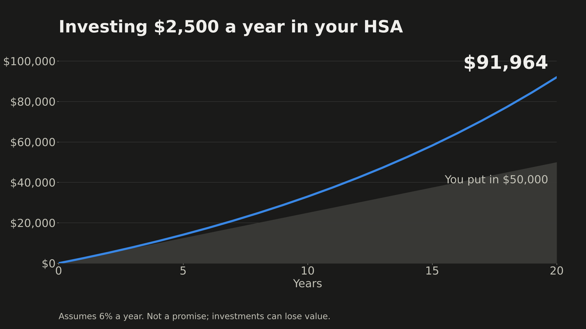
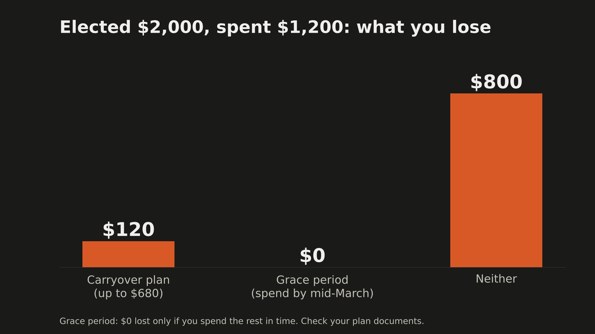
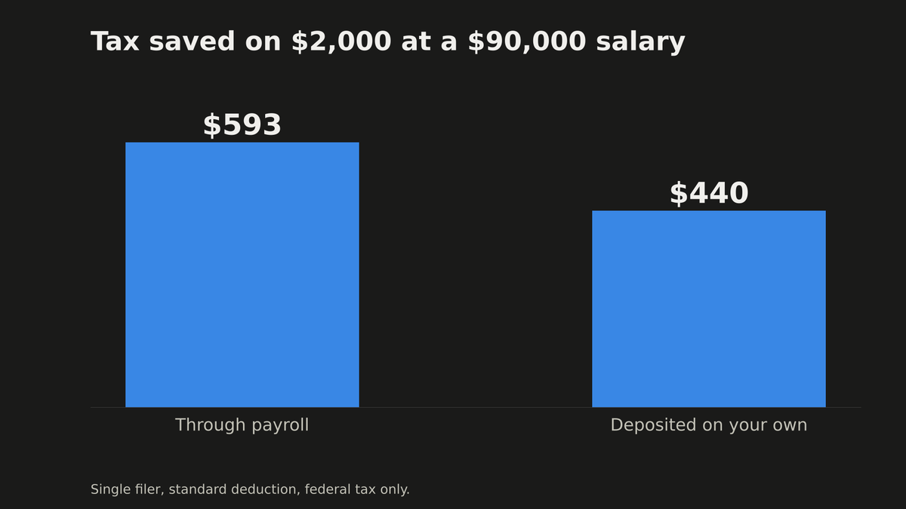

Video 1 · Open enrollment
HSA vs FSA: Which One Should You Pick? (The Real Math)
Watch on YouTube · Run your own numbers in the HSA vs FSA calculator
The numbers in this video
Example: single filer, $90,000 salary, standard deduction, $2,000 of expected medical costs. Every figure comes from the calculator, not from memory.
$593Tax saved in year one on $2,000 through payroll. HSA or FSA, it's a tie: $440 federal income tax + $153 Social Security and Medicare.
$800Lost from an FSA in a light year: elected $2,000, spent $1,200, no carryover. With a $680 carryover, $120 is lost.
$91,964HSA after 20 years if you put in $4,500 a year, spend $2,000 of it and invest the $2,500 left at an assumed 6%.
$165,535The receipts strategy: invest the full $4,500 a year for 20 years at 6% and pay costs out of pocket.
Charts from the video



Chapters
- 0:00 Two accounts, one tax break
- 0:18 The $593 you pay by default
- 1:14 Where every number comes from
- 1:28 Year one: they're tied
- 2:58 The FSA deadline that can cost $800
- 4:41 The HSA as a retirement account
- 6:52 Payroll vs doing it yourself
- 7:37 When no account is right
- 8:34 Your two-question checklist
Sources
- HSA limits for 2027: IRS Rev. Proc. 2026-24.
- Health FSA limit and carryover (2026): IRS Rev. Proc. 2025-32. The 2027 FSA figures and tax brackets were not yet published when this video was made; the numbers will be rerun when they are (see updates).
- 2026 tax brackets and standard deduction: IRS Rev. Proc. 2025-32.
- HSA rules, qualified expenses, no deadline to reimburse yourself: IRS Publication 969.
The 6% return is an assumption, not a promise. Federal tax only; your state may differ.